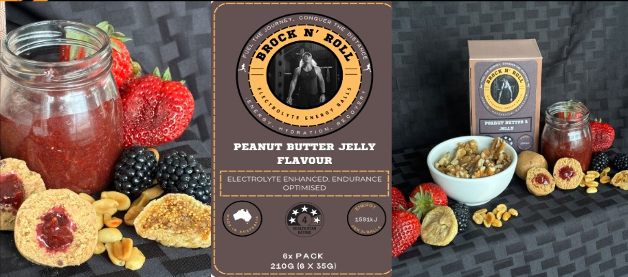

Brock N Roll Bites — Nutrition Unit
I created Brock n Roll Bites in 2024 to support Ned Brockmann during his 16,000 km run. Each bite was built for steady energy without a sugar spike: a chewy outer layer made from whole foods; berries, oats, coconut, and dried fruits. This was paired with a gooey, jelly-like centre made from goji berries and other nutrient dense ingredients. The mix delivered slow-release carbohydrates, some protein and healthy fats, plus added electrolytes to help replace minerals lost through sweat. Compact and light, the bites were easy to carry and eat on the move, and contained no added sugars, aligning with the goal of sustained energy over long distances.